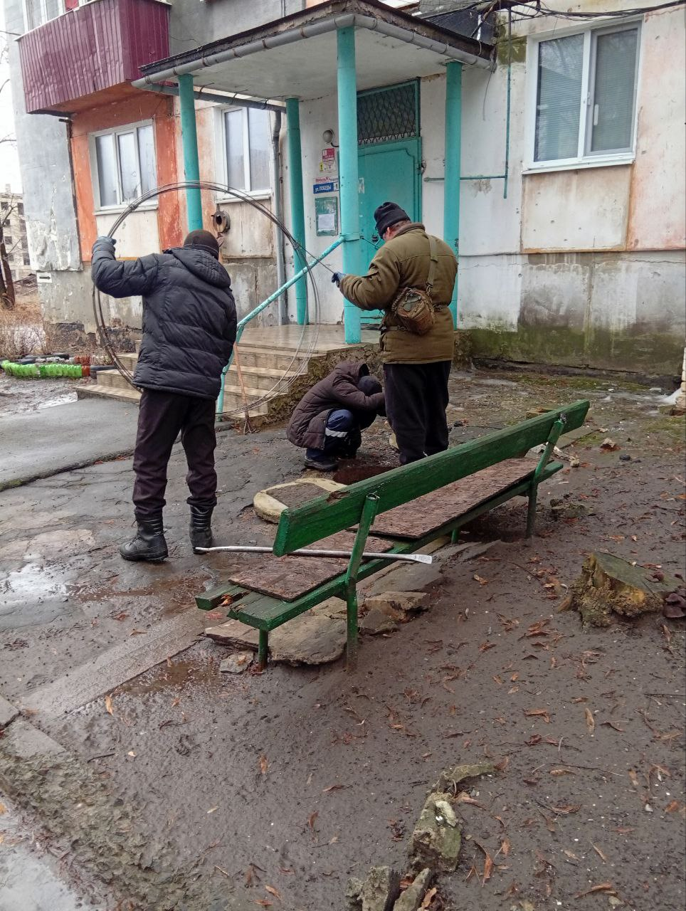

Дата: 18.02.2026

Ситуация в Кременной остаётся неоднозначной. По словам жителей, после того как линия фронта отодвинулась дальше и активность в районе лесов снизилась, количество прилётов заметно сократилось. Обстановка стала спокойнее, хотя полностью фактор угрозы не исчез.
Дроны продолжали фиксироваться, позже их стало меньше. Однако многое зависит не только от расстояния до линии соприкосновения, но и от общей интенсивности их применения.
При этом улучшение военной обстановки не привело к заметному росту качества жизни. Связь остаётся слабой и нестабильной. Интернет доступен ограниченно — в основном у административных структур и отдельных организаций. Для большинства жителей полноценная связь по-прежнему остаётся проблемой.
Цены в городе выше средних. Это связывают со сложной логистикой и состоянием дорог. Дорожная инфраструктура серьёзно изношена и требует восстановления, что для прифронтового города ожидаемо.
Медицинская сфера испытывает кадровую нагрузку. По словам жителей, не хватает специалистов, условия остаются непростыми. При этом сотрудники продолжают работать в сложной обстановке и обеспечивать приём пациентов.
С коммунальной сферой ситуация относительно стабильная. Свет, газ и вода в целом подаются регулярно, перебои носят плановый или технический характер. Локальная сеть функционирует в рабочем режиме, если отключения не связаны с внешними источниками.
В городе ощущается нехватка специалистов практически во всех сферах — от управленческих до рабочих. Это влияет на темпы решения бытовых вопросов. Коммунальные службы продолжают выполнять значительный объём работы в сложных условиях.
Кременная остаётся прифронтовым городом. Более активная жизнь сосредоточена в центре, на окраинах она протекает спокойнее и сложнее. Особенно уязвимыми остаются пожилые жители.
Ситуация стала спокойнее с точки зрения безопасности, но бытовые вопросы остаются актуальными. Основные ожидания жителей связаны с восстановлением дорог, улучшением связи и укреплением социальной инфраструктуры.